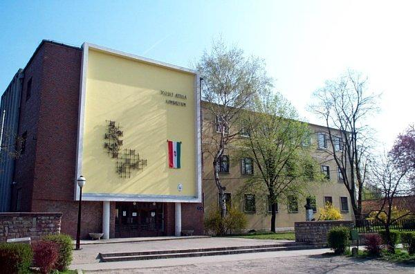
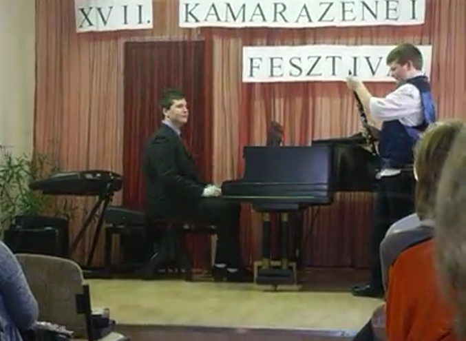
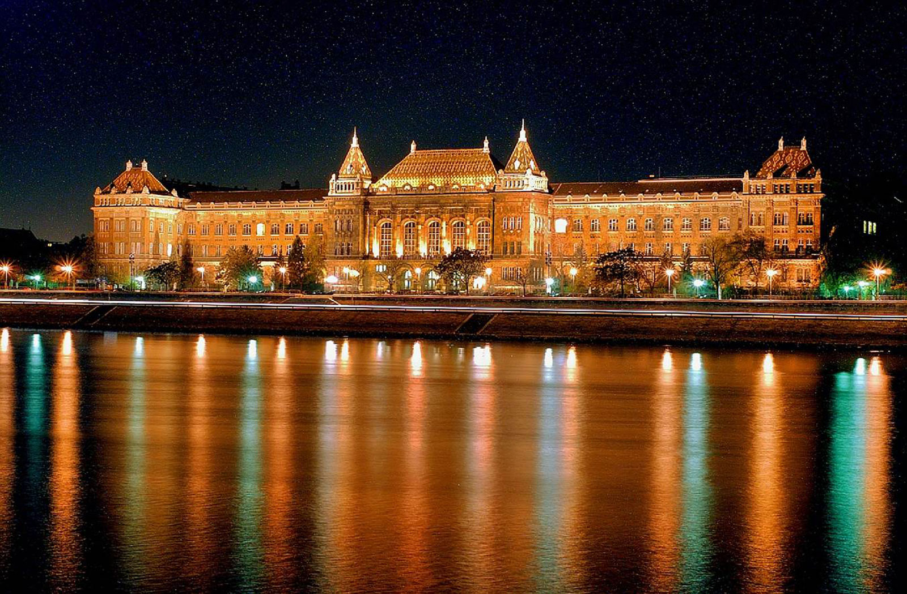

Portfolió
Rólam
Budapesten születtem, tanlumányaimat a monori József Attila Gimnázium és Közgazdasági Szakgimnázium
hatosztályos képzés keretében végeztem.Gimnáziumi éveim alatt kezdtem érdeklődni a fizika világa
iránt,amelyet a gimnázium által megrendezett különféle programoknak(pl.gyárlátogatások,kutatók
éjszakája) köszönhetek.

Gyerekkoromat végigkisérte a zene: két évig zongoráztam valamint hat évig klarinétoztam,
ezért a
zenehallgatás számomra nagyon sokat jelent.

Most a Budapesti Műszaki és Gazdaságtudományi Egyetemen Energetikai mérnök szakán tanulok.
